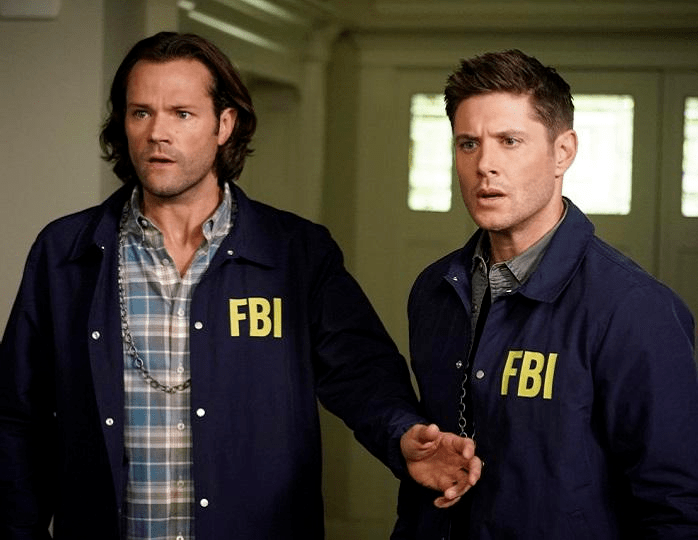

Объяснение концовки 15 сезона
Прошло 15 лет с момента премьеры «Сверхъестественного», сериала о приключениях братьев-охотников на монстров, Сэме и Дине Винчестерах, – и вот, их история закончилась. Но что именно произошло в конце? Ранее, девятнадцатый эпизод Inherit the Earth («Унаследовать Землю») подготовил почву для большой битвы. После того, как Бог/Чак отправился в турне по разрушению, положив конец каждому созданному им миру щелчком своих Таносоподобных пальцев, в конечном итоге Джек поглотил всю божественную силу во время драки между Майклом и Люцифером. Когда Джек стал Богом, мир возвращается к нормальному состоянию, и каждый человек, которого Чак стёр с лица земли, возвращается. В целом, пятнадцатый сезон порадовал своими событиями: Чак стал тем, кого он ненавидел больше всего – простым смертным. Ровена пожертвовала собой над пропастью в аду, лишь для того, чтобы стать здешней королевой; Кастиэль признался Дину в своей любви, прежде чем принести себя в жертву Пустоте, а Джек величественно растворился перед ними.